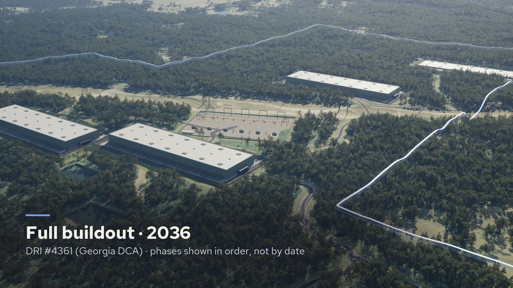
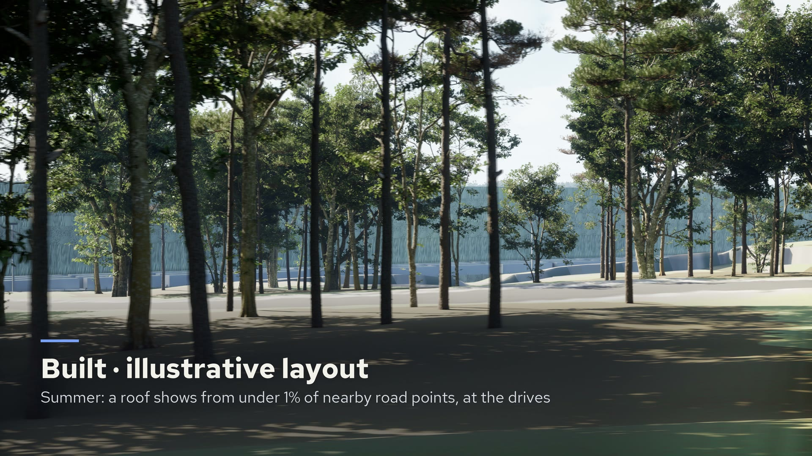
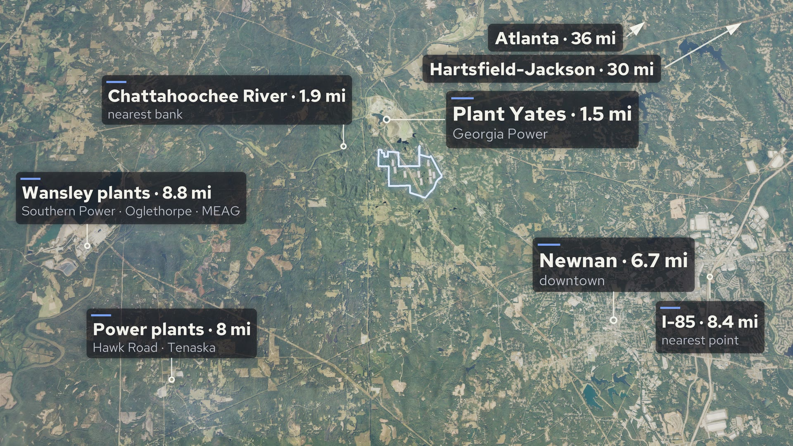

The films.
Three studio films, made from real listings and public filings. Two play in full, with sound. The third, a proposed data center campus, is shown frame by frame.
Two films in full.
Eighty seconds each, with sound recorded in the same kind of country. Press play.
We have also made 100+ full-length terrain films for TrailGoat. See them at trailgoat.run ↗ (opens in a new tab)
A planned project, start to finish.
Frames from a studio film of a proposed data center campus in Coweta County, Georgia, made from public filings and public data. The layout is our illustration, not the applicant’s plan, and the film says so on screen.






A proposed data center campus, Coweta County, Georgia. This is a studio film: neither the applicant nor the county commissioned it.
Where every figure comes from.
Nothing goes on screen that we can’t source.
The ground and the trees
USGS lidar at one meter. The trees in the film are the ones the lidar measured, at the heights it measured, with the flight date stated.
The property line
Your survey when you send one. Otherwise the county’s parcel map, labeled “boundaries approximate (county GIS, not a survey)” whenever the line or the acreage is on screen.
What can be seen
A line-of-sight study through the real tree canopy, from the road or from any point on the land. On the campus above, bare ground suggested a roof would show from three in four of the 1,256 road points within a mile. Through the trees that stay it was under 1%, and about one in five in a leaf-off worst case. Those figures are for our illustrative layout.
Earth moved and land cleared
Cut, fill and acres disturbed are worked out from the lidar ground and the layout on screen. They describe that layout. They are not an engineer’s design.
Anything not built yet
Buildings, roads or a division of lots that do not exist yet are labeled a concept, or illustrative, for as long as they are on screen.
Send a tract.
Tell us the parcel and what the film has to do: sell a listing, support an investment or show a plan.
Nothing goes on screen that we can’t source. Where every figure comes from →
Tracts, timber, farms and recreational land
Quoted by acreage and what the film has to show.
Development sites and planned projects
Quoted. A longer film with the build-out, the measurements and the regional view.
A single lot
$950. One lot or homesite, about 80 seconds, with a vertical cut and six stills.
Good questions.
What is a land marketing film?+
A short film that makes the case for a property. It shows the land’s strengths one at a time on the real ground, carries your brand, and ends on your name and how to reach you.
Is it only for selling land?+
No. The same kind of film markets a listing to buyers, a fund or a portfolio to investors, and a planned project to investors, neighbors and the boards that have to approve it.
What do we get?+
The film in 16:9, a 4:5 cut and a vertical cut for social feeds, and stills at full resolution, all in your brand.
How long does a film take?+
About a week for a single tract, from the parcel to a reviewed film. Most of that is checking the facts and your review. A development or a campus with a build-out takes longer, and we agree the timing before we start.
How accurate is it?+
The ground comes from USGS lidar at one meter and the trees are the real ones the lidar measured. Property lines come from the county’s parcel map, which is approximate and not a survey, unless you send your survey. Every figure carries the date of its data. A film is an illustration: it is not a survey, a timber cruise or an appraisal.
What if the county’s lines disagree with our records?+
It happens. We draw from your survey when you send one. Otherwise we use the county’s parcel map, quote your acreage, say that boundaries are approximate and ask you before going further if the difference is large.
Can it show what is not built yet?+
Yes. Buildings, roads and a division of lots that do not exist yet are labeled a concept, or illustrative, for every second they are on screen. If you send the real plan we build from it. If the layout is ours, the film says so.
Can the location stay confidential?+
Yes. The tract itself stays real, but place names, road names and landmarks are left out, the surroundings are generalized so they cannot be matched to a map, and location data is stripped from the files. The tract’s own outline is real, so someone who already knows the property could recognize it.
Can it carry our brand and disclosures?+
Yes. Your name, logo and colors go on the film, and any disclosure text goes on screen word for word. We do not review legal or securities compliance; that is for your counsel.
Can I use it on the MLS?+
MLS rules on rendered media differ from one system to the next. We check your MLS’s rules with you and, where they allow it, prepare a version for it with every rendered element labeled.
Who owns the film?+
You do. We show it as an example of our work only if you agree.
say hi
Let’s make
an impression.
Send the parcel IDs or a listing link and we’ll tell you what a film of it can show. The first conversation is free.
Send a tractImagination. Made tangible.